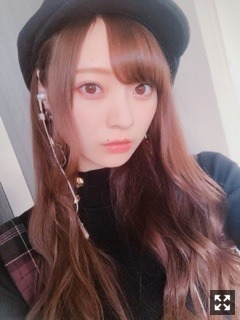
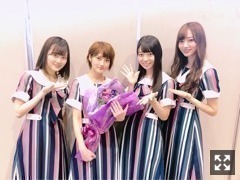

やっぱり秋冬が好き！
みなさまこんにちは！！
乃木坂46 の
梅澤美波です！！

ある日の梅澤です
この日は完全に秋モードでした
いやちょっと暑かったんだけどね
秋服着るとテンションあがるじゃない
だから無理やり着ました〜！（笑）
冬が待ち遠しいね〜
黒のコートさがそーっと☺︎
先日、名古屋での全国握手会！
お越しくださった皆様
ありがとうございました！
すごく暑くてたくさんの方がお越しくださり、
並ぶの大変だったよね(；；)
本当にありがとうございます(；；)
１ヶ月ぶりかな？の握手会で
なんだかドキドキしてたんだけど、、
始まったらずっと楽しくて
終始テンション高めの梅澤でした☺︎
私を理解してかけてくれる言葉が
こんなにも暖かくて人の心を救ってくれるものなんだって
とても嬉しく幸せでした☺︎
いつも本当にありがとうございます
頑張る理由がちゃんと私にはある！
皆様とお話して、そのとき
明確にちゃんと見える気がします！
お花も。
本当にいつもありがとうございます！
ペアはかりんさんとでした！
写真撮るの忘れちゃったんだけど、、(；；)
かりんさん推しのみなさん
とても優しくて、、、
相手してくださってありがとうございました！！(；；)
かりんさんとのペアすごく楽しかったな〜
なんだかすごく落ち着きました☺︎
そして本日は
東京ビッグサイトにて
個別握手会でした！！
こちらについてはまたら後日書きます！

大好きな若様軍団☺︎！
名古屋の全握にて
若様軍団員から若月さんへ花束を( ¨̮ )
ああ、だいすきです
映画「累」見てきました！やっと！
一人で観に行ったんだけど
このお仕事してて重なる部分とか
すごく残酷で
人間の醜い部分も包み隠さず描かれていて
観ててすごく苦しくなって
涙止まらなかったです、
本当に素敵な作品でした。
もう一度観にいきたい！
Aimerさんの主題歌も最っ高でした。
アニメやドラマ、舞台、映画、、
色んな作品に触れ合える場があって
いろんな面に感化され
自分に投影して観ることがあって
自分の無力さに落ち込むことが多々、、。
もっと勉強します！
そして先日、純奈さんが出演されている舞台
「七色いんこ」観てきました！！
純奈さんのお芝居が大好きだから
ずっと楽しみにしてたんです！！
登場から圧倒される存在感、貫禄、
本当にかっこよかったです(；；)
松田好花ちゃんも
すごく可愛かった〜(；；)！
そんな感じで
七色いんこ以外にも
最近は色々舞台観に行ったりもしています〜！
いろんな人に作品に触れ合える機会って
とても貴重で好きです( ¨̮ )
あ、久しぶりに3期生に
全握のときに会って
相変わらず可愛かったです( ¨̮ )
あやちゃん髪の毛切ってて
すごく可愛かった
長いのも好きだけど
わたし短いの推しだったから
たまらんかった
たまたゃーんと！
これは今日です( ¨̮ )
告知させてください！
▽１０／２３ BRODY さま
一人でロケ撮影して頂きました！
大人なイメージでのオールロケ撮影。
歩いてる時金木犀が香ったり
優しく賑やかなスタッフの皆さんと
楽しく撮影してきました！ぜひ！
〜握手会
▽１０／２１ 幕張メッセ個別握手会
▽１０／２７ パシフィコ横浜個別握手会
２７日はハロウィンコスプレしちゃいます〜
まだ迷っています〜（笑）
ぜひお待ちしております！
そして２２枚目シングルの
個別握手会、二次で全て完売、
本当にありがとうございます(；；)
毎回初めましての方が
すごくたくさん来てくださって
新しい出逢いがあることを
本当に嬉しく思います。
楽しんでいただけるよう
精一杯頑張ります！！
能條さんの卒業発表、
突然すぎてとてもびっくりしました。
人見知りすぎて人と距離を縮めるのに
すごく時間がかかってしまう私だけど、
セラミュを通してたくさん関わることが出来て
お芝居のことで
能條さんを見て学んだことが沢山あったし、
能條さんが本当に好きでたまらなくて( .. )
大好きな先輩の卒業は
本当に悲しく寂しいけど
先輩方がつくり上げてくださったものを
壊さず前を見て頑張りたいと思います！
残りの時間も大切に。
それでは！
また更新します
おやすみなさい
Original：https://www.nogizaka46.com/s/n46/diary/detail/47353?ima=4949&cd=MEMBER